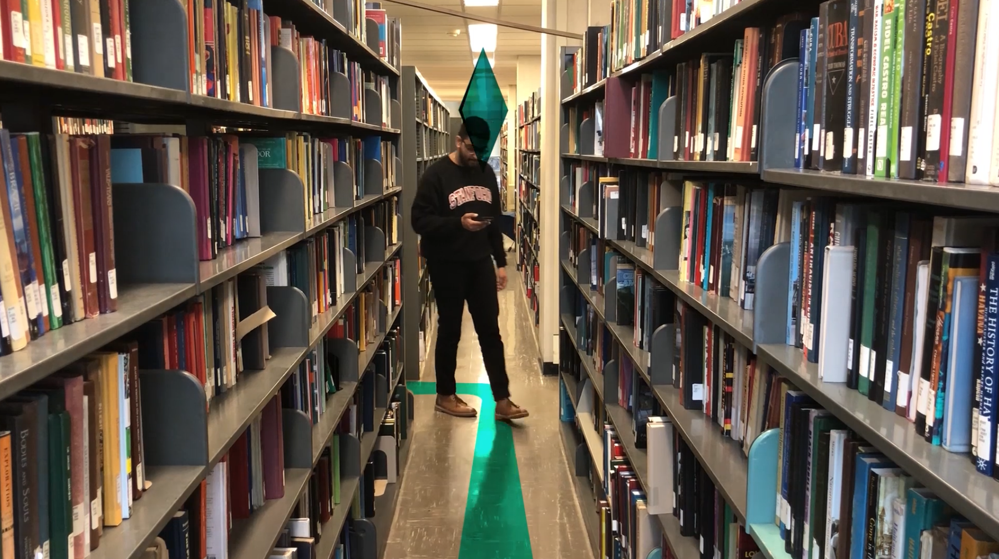
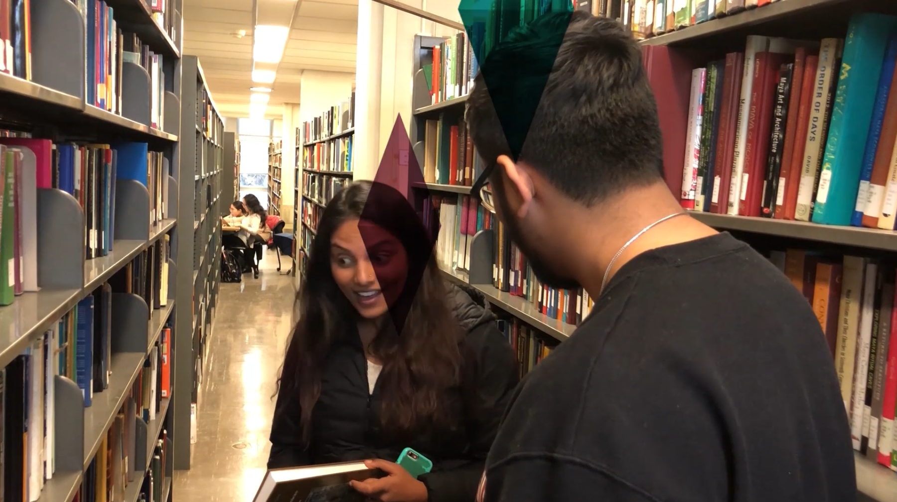
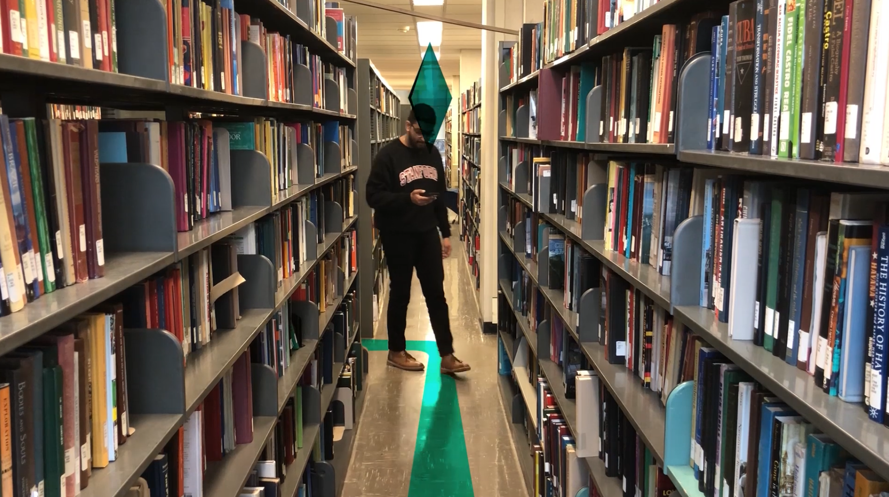
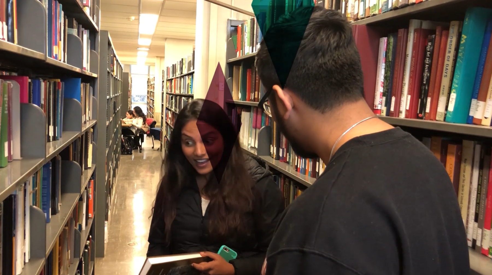

Reinventing the library with NAVi
The project
My classmates and I sought to conceptualize and pitch innovative uses of emerging technology at Carnegie Mellon University's Human-Computer Interaction Institute.
The insight
We found that local libraries were underused due to the tedious nature of the Dewey Decimal System.
The concept
We shot a video demonstrating how mobile augmented reality and RFID chips could enhance the search for information and build community in the library.
My role
I conducted initial surveys and designed wireframes and screens. Additionally, I wrote and acted in the concept video.
3 people / February 2018 - May 2018
People struggle with libraries.
To this day I still don't know how to properly navigate library shelves. I can only remember the general walk to the comic book section.
When given the opportunity to investigate new use cases for emerging technology, I jumped at the chance to investigate whether people shared my struggles. After surveying 60 teachers, students, and locals, we found that 85% of respondents did not use the library facilities to search for information, but rather to relax or study. A considerable 80% cited a desire to learn how to use library facilities to search for information.

A shot of the video where I'm "stressing out" over the thought of searching for books.
NAVi is more than just wayfinding.
Our team separately conceptualized ways to reinvent the library, a 400-year old institution. We came up with robotic book delivery and voice-assisted guides, but ultimately settled on the use of cheap RFID technology. Our service, NAVi, would leverage AR to illuminate a path to the book you're looking for.
We wanted our solutio to have implications further than just locating a book. Related novels would be marked on your map, and NAVi should facilitate relationships between individuals with similar interests. To that end, we tried to create a video that encapsulated NAVi's value proposition.
 



We planned our video from script and storyboard to scenes.
Painting a clear picture of the future
The key behind this solution is the capability of long range RFIDs. If the location of each book can be mapped to the blueprint of the library, this is a technically viable solution.
Given more time, I'd like to refine the visual effects in our video. Pitching a solution that represents a future world requires that the narrative be complemented with graphics that keep the user invested in the fantasy.